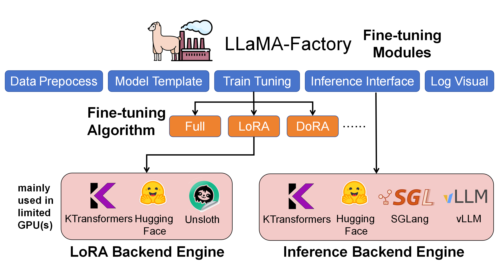

Introduction
A Flexible Framework for Experiencing Cutting-edge LLM Inference/Fine-tune Optimizations
🎯 Overview | 🚀 kt-kernel | 🎓 kt-sft | 🔥 Citation | 🚀 Roadmap(2025Q4)🎯 Overview
KTransformers is a research project focused on efficient inference and fine-tuning of large language models through CPU-GPU heterogeneous computing. The project has evolved into two core modules: kt-kernel and kt-sft.
🔥 Updates
- Nov 6, 2025: Support Kimi-K2-Thinking inference (Tutorial) and fine-tune (Tutorial)
- Nov 4, 2025: KTransformers Fine-Tuning × LLaMA-Factory Integration. (Tutorial)
- Oct 27, 2025: Support Ascend NPU. (Tutorial)
- Oct 10, 2025: Integrating into SGLang. (Roadmap, Blog)
- Sept 11, 2025: Support Qwen3-Next. (Tutorial)
- Sept 05, 2025: Support Kimi-K2-0905. (Tutorial)
- July 26, 2025: Support SmallThinker and GLM4-MoE. (Tutorial)
- July 11, 2025: Support Kimi-K2. (Tutorial)
- June 30, 2025: Support 3-layer (GPU-CPU-Disk) prefix cache reuse.
- May 14, 2025: Support Intel Arc GPU (Tutorial).
- Apr 29, 2025: Support AMX-Int8、 AMX-BF16 and Qwen3MoE (Tutorial)
- Apr 9, 2025: Experimental support for LLaMA 4 models (Tutorial).
- Apr 2, 2025: Support Multi-concurrency. (Tutorial).
- Mar 15, 2025: Support ROCm on AMD GPU (Tutorial).
- Mar 5, 2025: Support unsloth 1.58/2.51 bits weights and IQ1_S/FP8 hybrid weights. Support 139K Longer Context for DeepSeek-V3 and R1 in 24GB VRAM.
- Feb 25, 2025: Support FP8 GPU kernel for DeepSeek-V3 and R1; Longer Context.
- Feb 15, 2025: Longer Context (from 4K to 8K for 24GB VRAM) & Slightly Faster Speed （+15%, up to 16 Tokens/s), update docs and online books.
- Feb 10, 2025: Support Deepseek-R1 and V3 on single (24GB VRAM)/multi gpu and 382G DRAM, up to 3~28x speedup. For detailed show case and reproduction tutorial, see here.
- Aug 28, 2024: Decrease DeepseekV2’s required VRAM from 21G to 11G.
- Aug 15, 2024: Update detailed tutorial for injection and multi-GPU.
- Aug 14, 2024: Support llamfile as linear backend.
- Aug 12, 2024: Support multiple GPU; Support new model: mixtral 8*7B and 8*22B; Support q2k, q3k, q5k dequant on gpu.
- Aug 9, 2024: Support windows native.
📦 Core Modules
🚀 kt-kernel - High-Performance Inference Kernels
CPU-optimized kernel operations for heterogeneous LLM inference.
Key Features:
- AMX/AVX Acceleration: Intel AMX and AVX512/AVX2 optimized kernels for INT4/INT8 quantized inference
- MoE Optimization: Efficient Mixture-of-Experts inference with NUMA-aware memory management
- Quantization Support: CPU-side INT4/INT8 quantized weights, GPU-side GPTQ support
- Easy Integration: Clean Python API for SGLang and other frameworks
Quick Start:
cd kt-kernel
pip install .
Use Cases:
- CPU-GPU hybrid inference for large MoE models
- Integration with SGLang for production serving
- Heterogeneous expert placement (hot experts on GPU, cold experts on CPU)
Performance Examples:
| Model | Hardware Configuration | Total Throughput | Output Throughput |
|---|---|---|---|
| DeepSeek-R1-0528 (FP8) | 8×L20 GPU + Xeon Gold 6454S | 227.85 tokens/s | 87.58 tokens/s (8-way concurrency) |
🎓 kt-sft - Fine-Tuning Framework
KTransformers × LLaMA-Factory integration for ultra-large MoE model fine-tuning.

Key Features:
- Resource Efficient: Fine-tune 671B DeepSeek-V3 with just 70GB GPU memory + 1.3TB RAM
- LoRA Support: Full LoRA fine-tuning with heterogeneous acceleration
- LLaMA-Factory Integration: Seamless integration with popular fine-tuning framework
- Production Ready: Chat, batch inference, and metrics evaluation
Performance Examples:
| Model | Configuration | Throughput | GPU Memory |
|---|---|---|---|
| DeepSeek-V3 (671B) | LoRA + AMX | ~40 tokens/s | 70GB (multi-GPU) |
| DeepSeek-V2-Lite (14B) | LoRA + AMX | ~530 tokens/s | 6GB |
Quick Start:
cd kt-sft
# Install environment following kt-sft/README.md
USE_KT=1 llamafactory-cli train examples/train_lora/deepseek3_lora_sft_kt.yaml
🔥 Citation
If you use KTransformers in your research, please cite our paper:
@inproceedings{10.1145/3731569.3764843,
title = {KTransformers: Unleashing the Full Potential of CPU/GPU Hybrid Inference for MoE Models},
author = {Chen, Hongtao and Xie, Weiyu and Zhang, Boxin and Tang, Jingqi and Wang, Jiahao and Dong, Jianwei and Chen, Shaoyuan and Yuan, Ziwei and Lin, Chen and Qiu, Chengyu and Zhu, Yuening and Ou, Qingliang and Liao, Jiaqi and Chen, Xianglin and Ai, Zhiyuan and Wu, Yongwei and Zhang, Mingxing},
booktitle = {Proceedings of the ACM SIGOPS 31st Symposium on Operating Systems Principles},
year = {2025}
}
👥 Contributors & Team
Developed and maintained by:
- MADSys Lab @ Tsinghua University
- Approaching.AI
- Community contributors
We welcome contributions! Please feel free to submit issues and pull requests.
💬 Community & Support
- GitHub Issues: Report bugs or request features
- WeChat Group: See archive/WeChatGroup.png
{kind=link}
📦 KT original Code
The original integrated KTransformers framework has been archived to the archive/ directory for reference. The project now focuses on the two core modules above for better modularity and maintainability.
For the original documentation with full quick-start guides and examples, see:
- archive/README.md (English)
- archive/README_ZH.md (中文)
KT-Kernel
High-performance kernel operations for KTransformers, featuring CPU-optimized MoE inference with AMX, AVX, KML and blis (amd library) support.
- Note
- Features
- Installation
- Verification
- Integration with SGLang
- Direct Python API Usage
- Build Configuration
- Error Troubleshooting
- Weight Quantization
- Before Commit!
Note
Current Support Status:
- ✅ Intel CPUs with AMX: Fully supported (using weights converted to INT4/INT8 format)
- ✅ Universal CPU (llamafile backend): Supported (using GGUF-format weights)
- ✅ AMD CPUs with BLIS: Supported (for int8 prefill & decode)
Features
- CPU-Optimized MoE Kernels: High-throughput MoE expert kernels optimized for instruction sets.
- AMX INT4/INT8 Backend: INT4 / INT8 quantized expert inference backend for AMX-capable servers.
- Llamafile CPU Backend: AVX2/AVX512-based MoE backend built on Llamafile for universal CPU deployment.
- NUMA-Aware Execution: Thread pool and memory layout designed for multi-socket / multi-NUMA machines.
Installation
Prerequisites
First, initialize git submodules:
git submodule update --init --recursive
Quick Installation (Recommended)
Step 0: Create and activate a conda environment (recommended):
conda create -n kt-kernel python=3.11 -y
conda activate kt-kernel
You can now install in two clear steps using the same script.
Option A: Two-step (specify dependencies installation and build separately)
# 1) Install system prerequisites (cmake, hwloc, pkg-config)
./install.sh deps
# 2) Build and install kt-kernel (auto-detects CPU instruction set)
# By default, the script cleans the local ./build directory before compiling
./install.sh build
Option B: One-step
./install.sh
The install script will:
- Auto-detect CPU capabilities (AMX support)
- Install
cmakevia conda (if available) - Install system dependencies (
libhwloc-dev,pkg-config) based on your OS
What gets configured automatically:
- AMX CPU detected →
NATIVE + AMX=ON - No AMX detected →
NATIVE + AMX=OFF
⚠️ Important for LLAMAFILE backend users:
If you have an AMX-capable CPU but plan to use the LLAMAFILE backend, do NOT use the default auto-detection build.
Use “manual mode” with CPUINFER_CPU_INSTRUCT set to AVX512 or AVX2 instead of NATIVE to avoid compilation issues (see below).
Manual Configuration (Advanced)
If you need specific build options (e.g., for LLAMAFILE backend, compatibility, or binary distribution):
# Example for LLAMAFILE backend on AMX CPU with AVX512
export CPUINFER_CPU_INSTRUCT=AVX512 # Options: NATIVE, AVX512, AVX2, FANCY
export CPUINFER_ENABLE_AMX=OFF # Options: ON, OFF
# Build only (skip auto-detection of instruction set)
./install.sh build --manual
For advanced build options and binary distribution, see the Build Configuration section. If you encounter issues, refer to Error Troubleshooting.
Verification
python -c "from kt_kernel import KTMoEWrapper; print('✓ kt-kernel installed successfully')"
Integration with SGLang
KT-Kernel can be used standalone via Direct Python API or integrated with SGLang for production deployment. This section describes SGLang integration to enable CPU-GPU heterogeneous inference, where “hot” experts run on GPU and “cold” experts run on CPU for optimal resource utilization.
Installation Steps
1. Install SGLang
git clone https://github.com/sgl-project/sglang.git
cd sglang
pip install -e "python[all]"
2. Prepare Weights
You need both GPU weights and CPU-side expert weights for heterogeneous inference. The exact format depends on the backend:
GPU Weights (for all backends):
Use the model weights required by SGLang for GPU inference (for example, the original or already-quantized model directory from Hugging Face).
CPU Weights (AMX backend: AMXINT4 / AMXINT8):
Quantize weights to AMX-optimized INT4/INT8 format using the provided script:
python scripts/convert_cpu_weights.py \
--input-path /path/to/model \
--input-type bf16 \
--output /path/to/cpu-weights \
--quant-method int8 # or int4 or moe_int8 (for amd now)
--input-path: Path to GPU-side original weights--input-type: Depends on your GPU weights type (fp8,fp16, orbf16)
In SGLang integration, --kt-weight-path should point to this converted CPU weights directory.
Supported input formats: FP8, FP16, BF16 → INT4/INT8.
CPU Weights (LLAMAFILE backend: LLAMAFILE):
LLAMAFILE uses pre-quantized GGUF weights on the CPU side directly, without running convert_cpu_weights.py. You need to:
- Download a GGUF model directly from the web (e.g., GGUF repos on Hugging Face / Modelscope);
- In SGLang integration, use that GGUF directory as
--kt-weight-path. KT-Kernel supports multiple GGUF quantization formats such asQ4_KM,Q4_K,Q5_K, etc. Choose based on your latency and accuracy requirements.
3. Launch SGLang Server
Start the SGLang server with your normal SGLang parameters, and add the following KT-Kernel specific parameters to enable CPU-GPU heterogeneous inference:
KT-Kernel Parameters to Add:
--kt-method: Backend method (AMXINT4, AMXINT8, or LLAMAFILE)--kt-weight-path: Path to the converted CPU weights--kt-cpuinfer: Number of CPU inference threads (set to physical cores)--kt-threadpool-count: Number of thread pools (set to NUMA node count)--kt-num-gpu-experts: Number of experts to keep on GPU--kt-max-deferred-experts-per-token: Deferred experts for pipelined execution
Example:
python -m sglang.launch_server \
[your normal SGLang parameters...] \
--kt-method AMXINT8 \
--kt-weight-path /path/to/cpu-weights \
--kt-cpuinfer 64 \
--kt-threadpool-count 2 \
--kt-num-gpu-experts 32 \
--kt-max-deferred-experts-per-token 2
See KT-Kernel Parameters section below for detailed parameter tuning guidelines.
Complete Example: Qwen3-30B-A3B
This example demonstrates the full workflow from downloading weights to launching the server, showing both AMX backend and LLAMAFILE backend options.
Hardware Configuration:
- GPU: NVIDIA RTX 4090 24GB
- CPU: 2x Intel Xeon Gold 6454S (64 physical cores total, 128 threads, 2 NUMA nodes)
- Model: Qwen3-30B-A3B
How to verify your system configuration:
# Check CPU configuration
lscpu | grep -E "^CPU\(s\)|Thread\(s\) per core|Socket\(s\)|NUMA node\(s\)"
# Expected output example:
CPU(s): 128
Thread(s) per core: 2
Socket(s): 2
NUMA node(s): 2
# → Physical cores = CPU(s) / Thread(s) per core = 128 / 2 = 64
Parameter Rationale:
--kt-cpuinfer 64: Set to physical cores (64), not hyperthreads (128)--kt-threadpool-count 2: 2 NUMA nodes detected (dual-socket system)--kt-num-gpu-experts 32: With 24GB GPU memory, we can fit ~32 experts on GPU for this model (varies by model architecture and actual memory usage)--kt-max-deferred-experts-per-token 2: Enable pipelined execution; allows CPU to process next batch while GPU completes current batch
Option A: AMX Backend (AMXINT8)
For Intel CPUs with AMX instruction set support.
Step 1: Download model weights
# Install huggingface-cli if not already installed
pip install huggingface-hub
# Download model from Hugging Face
huggingface-cli download Qwen/Qwen3-30B-A3B --local-dir /mnt/data/models/Qwen3-30B-A3B
Step 2: Convert to CPU weights (AMXINT8)
python scripts/convert_cpu_weights.py \
--input-path /mnt/data/models/Qwen3-30B-A3B \
--input-type bf16 \
--output /mnt/data/models/Qwen3-30B-A3B-INT8 \
--quant-method int8
Step 3: Launch SGLang server
python -m sglang.launch_server \
--host 0.0.0.0 \
--port 8000 \
--model /mnt/data/models/Qwen3-30B-A3B \
--trust-remote-code \
--mem-fraction-static 0.92 \
--chunked-prefill-size 4096 \
--served-model-name Qwen3-30B-A3B \
--enable-mixed-chunk \
--kt-method AMXINT8 \
--kt-weight-path /mnt/data/models/Qwen3-30B-A3B-INT8 \
--kt-cpuinfer 64 \
--kt-threadpool-count 2 \
--kt-num-gpu-experts 32 \
--kt-max-deferred-experts-per-token 2
Option B: LLAMAFILE Backend (GGUF)
For universal CPUs (no AMX required), using pre-quantized GGUF weights directly.
Step 1: Download GPU weights (original model)
pip install huggingface-hub
huggingface-cli download Qwen/Qwen3-30B-A3B --local-dir /mnt/data/models/Qwen3-30B-A3B
Step 2: Download CPU weights (GGUF format)
huggingface-cli download Qwen/Qwen3-30B-A3B-GGUF Qwen3-30B-A3B-Q4_K_M.gguf \
--local-dir /mnt/data/models/Qwen3-30B-A3B-Q4_K_M
Step 3: Launch SGLang server
python -m sglang.launch_server \
--host 0.0.0.0 \
--port 8000 \
--model /mnt/data/models/Qwen3-30B-A3B \
--trust-remote-code \
--mem-fraction-static 0.92 \
--chunked-prefill-size 4096 \
--served-model-name Qwen3-30B-A3B \
--enable-mixed-chunk \
--kt-method LLAMAFILE \
--kt-weight-path /mnt/data/models/Qwen3-30B-A3B-Q4_K_M \
--kt-cpuinfer 64 \
--kt-threadpool-count 2 \
--kt-num-gpu-experts 32 \
--kt-max-deferred-experts-per-token 2
KT-Kernel Parameters
| Parameter | Description | Example Value |
|---|---|---|
--kt-method | CPU inference backend method | AMXINT4, AMXINT8, or LLAMAFILE |
--kt-weight-path | Path to quantized CPU weights | /path/to/cpu-weights |
--kt-cpuinfer | Number of CPU inference threads | 64 (adjust based on CPU cores) |
--kt-threadpool-count | Number of thread pools for parallel execution | 2 (typically 1-4) |
--kt-num-gpu-experts | Number of experts to keep on GPU | 32 (remaining experts go to CPU) |
--kt-max-deferred-experts-per-token | Number of experts per token to defer for pipelined execution | 2 (0 to disable, 1-4 recommended) |
Parameter Guidelines:
-
kt-method: Choose based on your CPU and weight format:AMXINT4: Best performance on AMX CPUs with INT4 quantized weights (May cause huge accuracy drop for some models, e.g., Qwen3-30B-A3B)AMXINT8: Higher accuracy with INT8 quantized weights on AMX CPUsLLAMAFILE: GGUF-based backend
-
kt-cpuinfer: Set to the number of physical CPU cores (not hyperthreads).- Check physical cores:
lscpu | grep -E "^CPU\(s\)|Thread\(s\) per core" - Physical cores = CPU(s) / Thread(s) per core
- Example: If CPU(s)=128 and Thread(s) per core=2, then physical cores = 64
- Important: Do NOT set to hyperthread count - this will degrade performance
- Check physical cores:
-
kt-threadpool-count: Set to the number of NUMA nodes.- Check NUMA count:
lscpu | grep "NUMA node(s)" - Or use:
numactl --hardware | grep "available" - Note: NUMA node count is NOT necessarily the number of physical CPUs
- It represents memory domains, which may be divided within a single CPU or across multiple CPUs
- Use the NUMA node count from
lscpu, regardless of physical CPU count
- Typical values: 1-2 for single-socket, 2-4 for dual-socket systems
- This enables better memory bandwidth utilization across NUMA domains
- Check NUMA count:
-
kt-num-gpu-experts: Determine based on GPU memory and profiling:- More GPU experts = lower latency but higher GPU memory usage (May cause OOM)
-
kt-max-deferred-experts-per-token: Enables pipelined execution:0: Synchronous execution (simpler, higher latency)1-4: Deferred execution (recommended range; good latency/quality balance, requires tuning)5-7: Highest latency reduction but may introduce noticeable accuracy loss; use with care
Direct Python API Usage
For standalone usage without SGLang, you can use KT-Kernel directly via Python API:
from kt_kernel import KTMoEWrapper
# Initialize the MoE wrapper
wrapper = KTMoEWrapper(
layer_idx=0,
num_experts=8,
num_experts_per_tok=2,
hidden_size=4096,
moe_intermediate_size=14336,
num_gpu_experts=2,
cpuinfer_threads=32,
threadpool_count=2,
weight_path="/path/to/weights",
chunked_prefill_size=512,
method="AMXINT4" # Options: "AMXINT4", "AMXINT8", "LLAMAFILE"
)
# Load weights (from disk - pre-quantized)
wrapper.load_weights(physical_to_logical_map)
# Or load weights from tensors (online quantization)
wrapper.load_weights_from_tensors(gate_proj, up_proj, down_proj, physical_to_logical_map)
# Run inference
output = wrapper.forward(hidden_states, topk_ids, topk_weights, cuda_stream)
# Or use async API for better performance
wrapper.submit_forward(hidden_states, topk_ids, topk_weights, cuda_stream)
# ... do other work ...
output = wrapper.sync_forward(hidden_states, cuda_stream)
Advanced Options
# Initialize with additional options
wrapper = KTMoEWrapper(
layer_idx=0,
num_experts=8,
num_experts_per_tok=2,
hidden_size=4096,
moe_intermediate_size=14336,
num_gpu_experts=2,
cpuinfer_threads=32,
threadpool_count=2,
weight_path="/path/to/weights",
chunked_prefill_size=512,
method="AMXINT4",
cpu_save=False, # Keep weights in CPU memory after loading
max_deferred_experts_per_token=0 # Number of experts to defer (for pipelined execution)
)
# Pre-allocate buffers for specific batch sizes (improves performance)
KTMoEWrapper.set_capture_batch_sizes([1, 2, 4, 8, 16])
# Query captured batch sizes
batch_sizes = KTMoEWrapper.get_capture_batch_sizes()
# Clear buffer cache to free memory
KTMoEWrapper.clear_buffer_cache()
Build Configuration
Manual Installation
If you prefer manual installation without the install.sh script, follow these steps:
1. Install System Dependencies
Prerequisites:
cmake(recommended:conda install -y cmake)libhwloc-devandpkg-config
2. Set Build Configuration
Core Options:
| Variable | Options | Description |
|---|---|---|
CPUINFER_CPU_INSTRUCT | NATIVE, AVX512, AVX2, FANCY | CPU instruction set to use |
CPUINFER_ENABLE_AMX | ON, OFF | Enable Intel AMX support |
CPUINFER_BUILD_TYPE | Release, Debug, RelWithDebInfo | Build type (default: Release) |
CPUINFER_PARALLEL | Number | Parallel build jobs (default: auto-detect) |
CPUINFER_VERBOSE | 0, 1 | Verbose build output (default: 0) |
Instruction Set Details:
NATIVE: Auto-detect and use all available CPU instructions (-march=native) - Recommended for best performanceAVX512: Explicit AVX512 support for Skylake-SP and Cascade LakeAVX2: AVX2 support for maximum compatibilityFANCY: AVX512 with full extensions (AVX512F/BW/DQ/VL/VNNI) for Ice Lake+ and Zen 4+. Use this when building pre-compiled binaries to distribute to users with modern CPUs. For local builds, preferNATIVEfor better performance.
Example Configurations:
# Maximum performance on AMX CPU
export CPUINFER_CPU_INSTRUCT=NATIVE
export CPUINFER_ENABLE_AMX=ON
# AVX512 CPU without AMX
export CPUINFER_CPU_INSTRUCT=AVX512
export CPUINFER_ENABLE_AMX=OFF
# Compatibility build
export CPUINFER_CPU_INSTRUCT=AVX2
export CPUINFER_ENABLE_AMX=OFF
# Debug build for development
export CPUINFER_BUILD_TYPE=Debug
export CPUINFER_VERBOSE=1
3. Build and Install
# Editable installation (for development)
pip install -e .
# Standard installation
pip install .
Error Troubleshooting
CUDA Not Found
-- Looking for a CUDA compiler - NOTFOUND
CMake Error at CMakeLists.txt:389 (message):
KTRANSFORMERS_USE_CUDA=ON but CUDA compiler not found
Make sure you have the CUDA toolkit installed and nvcc is in your system PATH.
Try export CMAKE_ARGS="-D CMAKE_CUDA_COMPILER=$(which nvcc)" and reinstall again.
hwloc Not Found
Run sudo apt install libhwloc-dev if on a Debian-based system or build from source: https://www.open-mpi.org/projects/hwloc/.
wget https://download.open-mpi.org/release/hwloc/v2.12/hwloc-2.12.2.tar.gz
tar -xzf hwloc-2.12.2.tar.gz
cd hwloc-2.12.2
./configure
make
sudo make install
Weight Quantization
For AMX backends (AMXINT4 / AMXINT8), CPU-side experts must be converted to AMX-friendly INT4/INT8 format using the provided script:
python scripts/convert_cpu_weights.py \
--input-path /path/to/model \
--input-type bf16 \
--output /path/to/output \
--quant-method int4
Supported formats: FP8, FP16, BF16 → INT4/INT8
For LLAMAFILE backend (LLAMAFILE), CPU-side experts are loaded directly from GGUF weights. You do not need to run the AMX conversion script; instead, download a GGUF model from the web (e.g., a GGUF repo on Hugging Face) and point weight_path / SGLang --kt-weight-path (or --model when appropriate) to that GGUF directory. KT-Kernel supports multiple GGUF quantization types such as Q4_KM, Q4_K, Q5_K, etc.
For detailed documentation, advanced options, and low-memory mode, see scripts/README.md.
Before Commit!
Commit messages should follow the Conventional Commits specification: https://www.conventionalcommits.org/
Please format your code before committing:
cmake -B build
cd build
make format
You may need a newer clang-format (at least version 18). In a conda environment:
conda install -c conda-forge clang-format=18
rm -rf build
It’s also recommended to install black for Python code formatting:
conda install black
KTransformers Fine-Tuning × LLaMA-Factory Integration – User Guide
MadSys Lab, KVCache-AI Team, Approaching AI, LLaMA-Factory Team
Introduction
From DeepSeek-V3/R1 to Qwen3-MoE and Kimi-K2, each wave of open-sourced large models brings leaps in performance and scale. However, many researchers and developers are constrained by expensive GPUs and models with tens or even hundreds of billions of parameters, making it hard to fine-tune very large models under limited resources. To bridge this gap, we propose a practical approach: combining KTransformers with LLaMA-Factory. With just 2–4 RTX 4090s and a high-memory CPU, you can fine-tune ultra-large MoE models like DeepSeek-671B.
Our goal is to give resource-constrained researchers a local path to explore fine-tuning ultra-large models, and also a fast way to customize smaller models (e.g., 14B/30B) for specific scenarios. We validate the setup using stylized dialogue, Westernized translation tone, and medical Q&A as representative tasks, showing that personalized adaptation can be achieved within hours.
As shown below, LLaMA-Factory is the unified orchestration/configuration layer for the whole fine-tuning workflow—handling data, training scheduling, LoRA injection, and inference interfaces. KTransformers acts as a pluggable high-performance backend that takes over core operators like Attention/MoE under the same training configs, enabling efficient GPU+CPU heterogeneous cooperation.

Within LLaMA-Factory, we compared LoRA fine-tuning with HuggingFace, Unsloth, and KTransformers backends. KTransformers is the only workable 4090-class solution for ultra-large MoE models (e.g., 671B) and also delivers higher throughput and lower GPU memory on smaller MoE models (e.g., DeepSeek-14B).
| Under LoRA (BF16) + NekoQA-10K stylized dialogue | HuggingFace Backend | Unsloth Backend | KTransformers Backend |
|---|---|---|---|
| [14B-DeepSeekV2-Lite] LoRA fine-tuning throughput | 303.58 token/s | 455.37 token/s | 530.38 token/s |
| [14B-DeepSeekV2-Lite] GPU memory | 32.12 GB | 9.64 GB | 6.08 GB |
| [671B-DeepSeekV3] LoRA fine-tuning throughput | Too Huge to run | NOT SUPPORT | 40.35 token/s |
| [671B-DeepSeekV3] GPU memory (sum across GPUs) | theoretical 1400 GB † | NOT SUPPORT | 70 GB † |
† 1400 GB is a theoretical FP16 full-parameter resident footprint (not runnable). 70 GB is the measured peak with KT strategy (Attention on GPU + layered MoE offload).

Fine-Tuning Results (Examples)
Stylized Dialogue (CatGirl tone)
Dataset: NekoQA-10K. Goal: improve style consistency and recognizability.
The figure compares responses from the base vs. fine-tuned models. The fine-tuned model maintains the target tone and address terms more consistently (red boxes), validating the effectiveness of style-transfer fine-tuning.

Benchmarks
We use:
(1) Translational-Style-ChatLLM, which asks for an exaggerated, Westernized translation tone—clear, stylized customization.
(2) AfriMed-QA (ACL 2025), a medical dataset for African contexts with strong domain specificity, including multiple-choice and short-answer sub-tasks—well-suited for vertical fine-tuning evaluation.
The tables show metrics before vs. after LoRA fine-tuning. We observe large improvements across metrics, verifying fine-tuning effectiveness:
| Translational-Style dataset | BLEU-1 | BLEU-2 | BLEU-3 | BLEU-4 | ROUGE-1 | ROUGE-2 | ROUGE-L |
|---|---|---|---|---|---|---|---|
| V2-Lite (no LoRA) | 20.66 | 8.33 | 4.54 | 2.89 | 22.71 | 4.52 | 19.19 |
| KT-LoRA fine-tuned V2-Lite | 35.41 | 22.44 | 15.42 | 11.18 | 42.03 | 18.38 | 33.10 |
| V3 base (no LoRA) | 8.49 | 3.34 | 1.62 | 0.96 | 15.91 | 2.55 | 10.07 |
| KT-LoRA fine-tuned V3 | 37.02 | 23.70 | 16.21 | 11.49 | 43.43 | 18.96 | 34.54 |
| AfriMed-QA (short answer) | BLEU-1 | BLEU-2 | BLEU-3 | BLEU-4 | ROUGE-1 | ROUGE-2 | ROUGE-L |
|---|---|---|---|---|---|---|---|
| V2-Lite (no LoRA) | 13.58 | 11.12 | 9.10 | 7.23 | 22.48 | 7.81 | 11.73 |
| KT-LoRA fine-tuned V2-Lite | 35.90 | 27.63 | 22.99 | 19.15 | 35.25 | 17.50 | 28.44 |
| V3 base (no LoRA) | 12.75 | 10.27 | 8.05 | 5.99 | 20.33 | 5.65 | 10.11 |
| KT-LoRA fine-tuned V3 | 42.42 | 34.12 | 28.95 | 24.54 | 41.97 | 22.37 | 33.28 |
| AfriMed-QA (multiple choice) | Accuracy |
|---|---|
| V2-Lite (no LoRA) | 0.0645 |
| KT-LoRA fine-tuned V2-Lite | 0.4812 |
| V3 base (no LoRA) | 0.5833 |
| KT-LoRA fine-tuned V3 | 0.7930 |
Even for ultra-large MoE models, KTransformers-backed fine-tuning achieves strong task performance quickly.
Quick to Start
This section shows how to install and use LLaMA-Factory + KTransformers for fine-tuning and inference:
- Environment setup
- Fine-tune ultra-large MoE models with KTransformers backend
- Load the fine-tuned model (base + LoRA adapter) for chat/inference
- Batch inference and metric evaluation
Environment Setup
According to the following example, install both the KTransformers and LLaMA-Factory environments simultaneously. This time, to simplify the installation process of KTransformers, we have specially packaged a wheel file to avoid local compilation. The detailed installation steps are as follows: (Note: Make sure your local Python version, Torch version, CUDA version, and the KTransformers wheel filename correspond correctly.)
# 1. Create a conda environment
conda create -n Kllama python=3.12 # choose from : [3.10, 3.11, 3.12, 3.13]
conda install -y -c conda-forge libstdcxx-ng gcc_impl_linux-64
conda install -y -c nvidia/label/cuda-11.8.0 cuda-runtime
# 2. Install the LLaMA-Factory environment
git clone --depth 1 https://github.com/hiyouga/LLaMA-Factory.git
cd LLaMA-Factory
pip install -e ".[torch,metrics]" --no-build-isolation
# 3. Install the KTransformers wheel that matches your Torch and Python versions, from https://github.com/kvcache-ai/ktransformers/releases/tag/v0.4.1 (Note: The CUDA version can differ from that in the wheel filename.)
pip install ktransformers-0.4.1+cu128torch27fancy-cp312-cp312-linux_x86_64.whl
# 4. Install flash-attention, download the corresponding file based on your Python and Torch versions from: https://github.com/Dao-AILab/flash-attention/releases
pip install flash_attn-2.8.3+cu12torch2.7cxx11abiTRUE-cp312-cp312-linux_x86_64.whl
# abi=True/False can find from below
# import torch
# print(torch._C._GLIBCXX_USE_CXX11_ABI)
# 5. (Optional) If you want to use flash_infer (otherwise it defaults to triton)
git clone https://github.com/kvcache-ai/custom_flashinfer.git
pip install custom_flashinfer/
Usage tip: In LLaMA-Factory YAML, set use_kt: true and pick a kt_optimize_rule file to have KTransformers handle the core compute. The features below show typical configs.
Core Feature 1: Use KTransformers backend to fine-tune ultra-large MoE models
Run the command: USE_KT=1 llamafactory-cli train examples/train_lora/deepseek3_lora_sft_kt.yaml.
Note: You must provide a BF16 model. DeepSeek-V3-671B is released in FP8 by default; convert with DeepSeek-V3/inference/fp8_cast_bf16.py.
### model
model_name_or_path: opensourcerelease/DeepSeek-V3-bf16
trust_remote_code: true
### method
stage: sft
do_train: true
finetuning_type: lora
lora_rank: 8
lora_target: all
### dataset
dataset: identity
template: deepseek
cutoff_len: 2048
max_samples: 100000
overwrite_cache: true
preprocessing_num_workers: 16
dataloader_num_workers: 4
### output
output_dir: saves/Kllama_deepseekV3
logging_steps: 10
save_steps: 500
plot_loss: true
overwrite_output_dir: true
save_only_model: false
report_to: none # choices: [none, wandb, tensorboard, swanlab, mlflow]
### train
per_device_train_batch_size: 1
gradient_accumulation_steps: 8
learning_rate: 1.0e-4
num_train_epochs: 3.0
lr_scheduler_type: cosine
warmup_ratio: 0.1
bf16: true
ddp_timeout: 180000000
resume_from_checkpoint: null
### ktransformers
use_kt: true # use KTransformers as LoRA sft backend
kt_optimize_rule: examples/kt_optimize_rules/DeepSeek-V3-Chat-sft-amx-multi-gpu.yaml
cpu_infer: 32
chunk_size: 8192
kt_optimize_rule controls placement strategy. See also ktransformers/optimize_rules. Naming hints (* = wildcard):
| Pattern | Meaning |
|---|---|
| DeepSeek-V2-Lite-Chat-* / DeepSeek-V3-Chat-* | Target model variants |
| -sft- | Strategy for fine-tuning; others are for inference |
| -amx- | Use AMX on CPU; otherwise use llamafile |
| -multi-gpu-X | Model parallel on X GPUs (X omitted → default 2 GPUs) |
Example: DeepSeek-V3-Chat-sft-amx-multi-gpu.yaml = V3-Chat fine-tuning with AMX and 2-GPU model parallel.
We recommend AMX acceleration where available (lscpu | grep amx). AMX supports BF16/INT8. Example:
- match:
name: "^model\\.layers\\..*\\.mlp\\.experts$"
replace:
class: ktransformers.operators.experts.KTransformersExperts # custom MoE Kernel with expert parallelism
kwargs:
prefill_device: "cpu"
prefill_op: "KExpertsTorch"
generate_device: "cpu"
generate_op: "KSFTExpertsCPU"
out_device: "cuda"
backend: "AMXInt8" # or "AMXBF16" or "llamafile" (default)
Outputs go to output_dir in safetensors format plus adapter metadata for later loading.

Core Feature 2: Chat with the fine-tuned model (base + LoRA adapter)
Run the command: llamafactory-cli chat examples/inference/deepseek3_lora_sft_kt.yaml.
Use the safetensors adapter trained with KT for inference.
model_name_or_path: opensourcerelease/DeepSeek-V3-bf16
adapter_name_or_path: saves/Kllama_deepseekV3
template: deepseek
infer_backend: ktransformers # choices: [huggingface, vllm, sglang, ktransformers]
trust_remote_code: true
use_kt: true # use KTransformers as LoRA sft backend to inference
kt_optimize_rule: examples/kt_optimize_rules/DeepSeek-V3-Chat-sft-amx-multi-gpu.yaml
cpu_infer: 32
chunk_size: 8192
We also support GGUF adapters: for safetensors, set the directory; for GGUF, set the file path in adapter_name_or_path.
During loading, LLaMA-Factory maps layer names to KT’s naming. You’ll see logs like Loaded adapter weight: XXX -> XXX:

Core Feature 3: Batch inference + metrics (base + LoRA adapter)
Run the command: API_PORT=8000 llamafactory-cli api examples/inference/deepseek3_lora_sft_kt.yaml.
Invoke the KT fine-tuned adapter to provide the API; the usage logic of other APIs is consistent with the native LLaMA-Factory approach.
model_name_or_path: opensourcerelease/DeepSeek-V3-bf16
adapter_name_or_path: saves/Kllama_deepseekV3
template: deepseek
infer_backend: ktransformers # choices: [huggingface, vllm, sglang, ktransformers]
trust_remote_code: true
use_kt: true # use KTransformers as LoRA sft backend to inference
kt_optimize_rule: examples/kt_optimize_rules/DeepSeek-V3-Chat-sft-amx-multi-gpu.yaml
cpu_infer: 32
chunk_size: 8192
KT Fine-Tuning Speed (User-Side View)
End-to-End Performance
Definitions
step_time: wall-clock time for a full optimization step (tensor movement + Attention + MoE + other compute).tokens_per_step = GAS × qlen;token/s = tokens_per_step / step_time.
Settings: GAS=16, qlen=512 (→ tokens_per_step = 8192); LoRA (r=8, alpha=32, dropout=0.1); AMX enabled; GPU: RTX 4090, CPU: Intel Xeon Platinum 8488C.
Measured
- DeepSeek-V3-671B:
step_time = 203 s→token/s ≈ 8192 / 203 ≈ 40.35 - DeepSeek-V2-Lite-14B:
step_time = 36 s→token/s ≈ 8192 / 36 ≈ 227.6
GPU/CPU Memory Footprint
- DeepSeek-V3 (671B; 61 layers with 58 MoE): ~70 GB total GPU VRAM (multi-GPU), ~1.2–1.3 TB CPU RAM.
- DeepSeek-V2-Lite (14B; 27 layers with 26 MoE): ~5.5 GB GPU VRAM, ~30 GB CPU RAM.
Conclusion
By integrating KTransformers LoRA fine-tuning into LLaMA-Factory, we provide a practical guide for efficient training and deployment of MoE LLMs. KT brings cutting-edge optimizations (DeepSeek/Qwen/Kimi support with AMX-accelerated kernels), and LoRA enables customization under very low GPU memory. LLaMA-Factory offers a friendly, unified interface.
This integration (akin to Unsloth-style speedups) means even models with tens to hundreds of billions of parameters can be fine-tuned and deployed with low latency on commodity hardware. You get memory savings, speed-ups, and usability together. We encourage you to try LLaMA-Factory + KT for your next MoE project and follow this guide. Feedback is welcome!
kt-sft Docs
KTransformers Fine-Tuning × LLaMA-Factory Integration – Developer Technical Notes
MadSys Lab, KVCache-AI Team, Approaching AI, LLaMA-Factory Team
Introduction
Recent open-source LLMs—from DeepSeek-V3/R1 to Qwen-MoE and Kimi-K2—have surged in performance and scale. Yet due to compute and memory constraints, it is difficult for typical researchers to fine-tune trillion-parameter-class models. We therefore integrate KTransformers with LLaMA-Factory so that, with 2–4 RTX 4090 GPUs and sufficient CPU memory, one can fine-tune ultra-large Mixture-of-Experts (MoE) models such as DeepSeek-671B.
This architecture bridges resource gaps, enabling local fine-tuning of ultra-large models, while also supporting efficient scenario customization at 14B/30B scales. We validate on stylized dialogue, Westernized translation tone, and medical Q&A, achieving rapid adaptation within hours.
Architecturally, LLaMA-Factory orchestrates data/config/training, LoRA insertion, and inference; KTransformers is a pluggable, high-performance operator backend that takes over Attention and MoE under the same training code, enabling GPU+CPU heterogeneity to accelerate training and reduce GPU memory.
We evaluated LoRA fine-tuning with HuggingFace default, Unsloth, and KTransformers backends (same settings and data). KTransformers is currently the only solution feasible on 2–4×24GB 4090s for 671B-scale MoE, and also shows higher throughput and lower GPU memory for 14B MoEs.
| Under LoRA (BF16) + NekoQA-10K stylized dialogue | HuggingFace Backend | Unsloth Backend | KTransformers Backend |
|---|---|---|---|
| [14B-DeepSeekV2-Lite] LoRA fine-tuning throughput | 303.58 token/s | 455.37 token/s | 530.38 token/s |
| [14B-DeepSeekV2-Lite] GPU memory | 32.12 GB | 9.64 GB | 6.08 GB |
| [671B-DeepSeekV3] LoRA fine-tuning throughput | Too Huge to run | NOT SUPPORT | 40.35 token/s |
| [671B-DeepSeekV3] GPU memory (sum across GPUs) | theoretical 1400 GB † | NOT SUPPORT | 70 GB † |
† The 1400 GB is the theoretical FP16 full-resident footprint (not runnable). 70 GB is the measured peak with KT (Attention on GPU + layered MoE offload).
From the table above, it can be seen that for the 14B model, the KTransformers backend achieves approximately 75% higher throughput than the default HuggingFace solution, while using only about one-fifth of the GPU memory. For the 671B model, both HuggingFace and Unsloth fail to run on a single 4090 GPU, whereas KTransformers is able to perform LoRA fine-tuning at 40 tokens/s, keeping the GPU memory usage within 70 GB.
Overall View of the KT Fine-Tuning Framework
We detail how KTransformers takes over core operators in LLaMA-Factory’s fine-tuning framework to optimize Attention and MoE.
DeepSeek-V3/V2 MoE models comprise a small-parameter dense Attention part and a large-parameter sparse MoE part. For illustration, consider layer 2 of DeepSeek-V2-Lite-Chat (from which each layer includes both Attention and MoE). Attention compute and KV cache mainly reside on the GPU; the heavyweight MoE part is primarily executed on the CPU. We first cover Attention replacement and inheritance, then MoE encapsulation and backend interfacing, and finally multi-GPU placement.
Attention (LoRA + KT coexist)
KTransformers provides operator injection (BaseInjectedModule), and PEFT provides LoRA layer insertion. For fine-tuning, we design KTransformersLinearLora, inheriting from both KTransformersLinear and LoraLayer:
- Inheritance:
KTransformersLinearLoraretains KT’s high-performance paths (prefill_linear/generate_linear) while accepting LoRA parameters (lora_A/lora_B). - Replacement: During preparation, we replace original
KTransformersLinearlayers (Q/K/V/O) withKTransformersLinearLora, preserving KT optimizations while enabling LoRA trainability.

After replacement, LoRA is inserted at Q/K/V/O linear transforms (left), and KTransformersLinearLora contains both KT fast paths and LoRA matrices (right).

MoE (operator encapsulation + backward)
Encapsulation
Given large parameters and sparse compute, we encapsulate the expert computation as a differentiable black-box operator—transparent upstream, replaceable downstream.
- Upstream (PyTorch graph): we register a custom Autograd Function so the MoE layer appears as a single node. In the left figure (red box), only
KSFTExpertsCPUis visible; on the right, the unencapsulated graph expands routing, dispatch, and FFN experts. Encapsulation makes the MoE layer behave like a standardnn.Modulewith gradients. - Downstream (backend): inside the Autograd Function, pybind11 calls C++ extensions for forward/backward. Multiple pluggable backends exist (AMX BF16/INT8; llamafile). The backend can be switched via YAML (e.g.,
"backend": "AMXBF16"vs."llamafile").

Backward (CPU)
MoE backward frequently needs the transposed weights $W^\top$. To avoid repeated runtime transposes, we precompute/cache $W^\top$ at load time (blue box). We also cache necessary intermediate activations (e.g., expert projections, red box) to reuse in backward and reduce recomputation. We provide backward implementations for llamafile and AMX (INT8/BF16), with NUMA-aware optimizations.

Multi-GPU Loading/Training: Placement strategy instead of DataParallel
To lower per-GPU memory peaks on 2–4 GPUs, we use model parallelism + explicit placement, not DataParallel (which duplicates the whole model on each GPU).
Key changes:
- KTrainer: takes over
.to(device)to prevent “move whole model to a single GPU”. Using KT’s optimize-rule YAML, each layer declaresdevice: cuda:0/cuda:1/...and is constructed directly on the target GPU (no extra copies). - Disable automatic DataParallel: when
USE_KT=1, we disable automatic DP wrappers from LLaMA-Factory/HF Trainer to avoid duplication and keep full control over sharding. - Gradient aggregation: gradients are reduced to
cuda:0. Intermediate activations stay local; only necessary tensors are transferred, cutting communication/activation overhead.
Thus, we keep KT placement strategies under multi-GPU fine-tuning. Users choose a kt_optimize_rule with multi-gpu. For DeepSeek-671B, DeepSeek-V3-Chat-sft-amx-multi-gpu.yaml is a typical 2-GPU plan: KV/attention parts on each GPU; MoE experts sharded on CPU; both GPUs share the workload.
KT-LoRA Fine-Tuning Evaluation
Setup
LLaMA-Factory orchestration, KTransformers backend, LoRA (rank=8, α=32, dropout=0.1, BF16), GAS=16, qlen=512, with the same KT optimize rule as training. We evaluate (a) stylized dialogue transfer and (b) two small-scale representative benchmarks: Translational-Style (generative) and AfriMed-QA (medical vertical; SAQ and MCQ). AMX is enabled; GPUs: 2×48GB RTX 4090; CPU: Intel Xeon Platinum 8488C.
Results
Stylized Dialogue (CatGirl tone)
Dataset: NekoQA-10K. The fine-tuned model consistently exhibits the target style (red boxes) versus neutral/rational base (blue). This shows KT-LoRA injects style features into the generation distribution with low GPU cost.

Translational-Style benchmark (generative)
Dataset: Translational-Style-ChatLLM. Metrics: BLEU-1/2/3/4, ROUGE-1/2/L.
| Translational-Style dataset | BLEU-1 | BLEU-2 | BLEU-3 | BLEU-4 | ROUGE-1 | ROUGE-2 | ROUGE-L |
|---|---|---|---|---|---|---|---|
| V2-Lite (no LoRA) | 20.66 | 8.33 | 4.54 | 2.89 | 22.71 | 4.52 | 19.19 |
| KT-LoRA fine-tuned V2-Lite | 35.41 | 22.44 | 15.42 | 11.18 | 42.03 | 18.38 | 33.10 |
| V3 base (no LoRA) | 8.49 | 3.34 | 1.62 | 0.96 | 15.91 | 2.55 | 10.07 |
| KT-LoRA fine-tuned V3 | 37.02 | 23.70 | 16.21 | 11.49 | 43.43 | 18.96 | 34.54 |
As shown by the test results in the tables above, under a unified workflow and placement strategy, both model scales exhibit consistent gains after fine-tuning, supporting the usability and effectiveness of the “KT backend + LoRA fine-tuning” combination for generative style control. At the same time, this indicates that KT’s heterogeneous placement and operator optimizations can stably support small-sample adaptation in the style domain.
Medical Vertical Benchmark (AfriMed-SAQ/MCQ)
The dataset adopts AfriMed-QA (ACL 2025), a domain-specific dataset for the medical field in Africa with strong scenario customization characteristics, comprising two formats—multiple-choice questions (MCQ) and short-answer questions (SAQ)—which in this case serve as the evaluation for vertical-domain fine-tuning. In terms of evaluation criteria, BLEU/ROUGE are used for SAQ, and Accuracy is used for MCQ.
| AfriMed-QA (SAQ) | BLEU-1 | BLEU-2 | BLEU-3 | BLEU-4 | ROUGE-1 | ROUGE-2 | ROUGE-L |
|---|---|---|---|---|---|---|---|
| V2-Lite (no LoRA) | 13.58 | 11.12 | 9.10 | 7.23 | 22.48 | 7.81 | 11.73 |
| KT-LoRA fine-tuned V2-Lite | 35.90 | 27.63 | 22.99 | 19.15 | 35.25 | 17.50 | 28.44 |
| V3 base (no LoRA) | 12.75 | 10.27 | 8.05 | 5.99 | 20.33 | 5.65 | 10.11 |
| KT-LoRA fine-tuned V3 | 42.42 | 34.12 | 28.95 | 24.54 | 41.97 | 22.37 | 33.28 |
| AfriMed-QA (MCQ) | Accuracy |
|---|---|
| V2-Lite (no LoRA) | 0.0645 |
| KT-LoRA fine-tuned V2-Lite | 0.4812 |
| V3 base (no LoRA) | 0.5833 |
| KT-LoRA fine-tuned V3 | 0.7930 |
As shown in the tables above, (1) DeepSeek-V3 (671B) after KT-LoRA fine-tuning achieves clearly higher performance than the fine-tuned DeepSeek-V2-Lite (14B) on both MCQ and SAQ, and it also surpasses the V3 base model. Within our small-scale setting, this preliminarily indicates that KT-LoRA fine-tuning of ultra-large-parameter models has practical significance in vertical domains.
(2) Across both SAQ/MCQ sub-tasks, KT-LoRA delivers consistent gains, indicating that—with KT’s heterogeneous placement and backend operator support—LoRA fine-tuning can effectively inject the key knowledge points of vertical domains such as medicine into the model.
Limitations
At present, most of our testing is conducted on single datasets and at small scale (≤ 20k examples), with the goal of providing existence evidence of system effectiveness for KT-LoRA fine-tuning, rather than drawing generalized conclusions about algorithmic generalization or scaling laws. Our report primarily presents representative figures; to support stronger algorithmic claims, larger sample sizes, multi-lingual/multi-domain datasets, and multi-seed repeated experiments would be required—these are beyond the scope of this work.
We also warmly welcome everyone to join the open-source LLaMA-Factory KT fine-tuning project. If you have additional test results, we especially welcome you to record them in the shared spreadsheet below, and to include the corresponding kt_optimize_rule files, dataset examples, training/evaluation YAMLs, and detailed GPU-memory and CPU configurations for community reference and reproducibility~!
Speed Tests
End-to-End Performance
Definitions
step_time：time per optimization step (tensor movement + Attention + MoE + others).
tokens_per_step = GAS × qlen；token/s = tokens_per_step / step_time。 We use GAS=16, qlen=512 → tokens_per_step=8192.
Measured
| Model | step_time (s) | tokens/step | token/s |
|---|---|---|---|
| DeepSeek-V3-671B | 203 | 8192 | 40.35 |
| DeepSeek-V2-Lite-14B | 36 | 8192 | 227.6 |
MoE Compute (DeepSeek-V3-671B)
Theory
- MoE per-layer, per-token FLOPs (forward+backward) approx.: $$ \text{FLOPs}_{\text{per-layer, per-token}} \approx c \cdot k \cdot H \cdot I $$
with $k = 8$（Top-k），$H = 7168$（hidden size），$I = 2048$（intermediate size），$c\approx16$（≈6 forward + ≈10 backward matmuls）。
- Per-step across all MoE layers: $$ \text{FLOPs}{\text{per-step}} \approx c \cdot qlen \cdot k \cdot H \cdot I \cdot L{\text{MoE}} $$
Plugging $c=16, qlen=512, k=8, H=7168, I=2048, L_{MoE}=58$，$\text{FLOPs}_{\text{per-step}} \approx 55.8\ \text{TFLOPs}$.
Measured (MoE TFLOPS on CPU)
If the MoE-only time per step is t_moe (seconds), $\text{TFLOPS} = \text{FLOPs}_{\text{per-step}} / \text{step_per_second}.$
Use MoE-phase time, not full step_time, to get MoE throughput.
| TFLOPS | Forward | Backward |
|---|---|---|
| Average | 17.55 | 18.41 |
Memory Footprint
- DeepSeek-V3 (671B; 58 MoE layers out of 61): ~70 GB total GPU, ~1.2–1.3 TB host memory.
- DeepSeek-V2-Lite (14B; 26 MoE layers out of 27): ~5 GB GPU, ~30 GB host memory.
Conclusion
Integrating KTransformers LoRA with LLaMA-Factory provides a practical path to efficiently train and deploy MoE LLMs. KT contributes placement strategies and operator optimizations (DeepSeek/Qwen/Kimi support with AMX-accelerated kernels), and LoRA enables customization with very low GPU memory; LLaMA-Factory supplies a coherent user-level interface.
This means even tens-to-hundreds-of-billion-parameter MoE models can be fine-tuned and served with low latency on ordinary hardware. The approach balances memory savings, speed, and usability, turning ultra-large models into tools that developers can actually wield.
Tutorial: Inject Operator Step by Step
Author: Azure-Tang
TL;DR
This tutorial will guide you through the process of injecting custom operators into a model using the KTransformers framework. We will use the DeepSeekV2-Chat model as an example to demonstrate how to inject custom operators into the model step by step. The tutorial will cover the following topics:
- TL;DR
- How to Write Injection Rules
- Understanding Model Structure
- Matrix Absorption-based MLA Injection
- Injection of Routed Experts
- Injection of Linear Layers
- Injection of Modules with Pre-calculated Buffers
- Specifying Running Devices for Modules
- Muti-GPU
- How to Write a New Operator and Inject into the Model
How to Write Injection Rules
The basic form of the injection rules for the Inject framework is as follows:
- match:
name: "^model\\.layers\\..*\\.*$" # Target module name
class: torch.nn.Linear # Target module
replace:
class: "default"
kwargs:
generate_device: "cuda:0"
# your_op_param_1: 1234
# your_op_param_2: 5678
recursive: True
- match: This field marks the matching rules, which can appear in two forms, name and class. These two matching rules can appear together or separately; they only match when both criteria are met.
- replace:
- class: Python class that can be imported to replace the target module. If no replacement is desired, set to default.
- kwargs: List of parameters needed for module initialization.
- generate_device: The device for this module, can be set to “cpu”, “cuda”, “cuda:1”, etc.
- recursive: Whether to recursively inject this module’s submodules, default is True.
For the recursive field: Some modules contain multiple submodules, such as the Self-attention module typically includes q/k/v/o four linear modules. If we replace the self-attention module but do not want the internal linear modules to be covered by other rules, set this rule to False.
Understanding Model Structure
Using deepseek-ai/DeepSeek-V2-Lite-Chat as an example, we can follow the above rules step by step to inject our custom module and run it. KTransformers offers a high degree of flexibility, allowing you to replace/experiment with basic operators. However, it also requires users to clearly understand the structure of the model they are running.
Fortunately, knowing the structure of a model is very simple. Open the file list on the deepseek-ai/DeepSeek-V2-Lite homepage, and you can see the following files:

From the .saftensors file, we can see the name of each layer’s weights, corresponding to the match.name attribute in the injection rules.
From the modeling_deepseek.py file, we can see the specific implementation of each module class, with the class name corresponding to the match.class attribute in the injection rules.
The structure of the DeepSeekV2 model from the .saftensors and modeling_deepseek.py files is as follows:

Supported operators and their corresponding classes are as follows:
| match | replace | backends | descriptions |
|---|---|---|---|
| Linear | KTransformersLinear | KLinearMarlin | Marlin as backend |
| KLinearTorch | pytorch as backend | ||
| KLinearCPUInfer | llamafile as backend | ||
| KLinearFP8 | Triton fp8_gemm kernel. Requires GPU be able to caluculate fp8 data | ||
| experts | KTransformersExperts | KExpertsTorch | pytorch as backend |
| KExpertsMarlin | Marlin as backend | ||
| KExpertsCPU | llamafile as backend | ||
| Attention | KDeepseekV2Attention | KDeepseekV2Attention | MLA implementation |
| MoE | KMistralSparseMoEBlock | KQwen2MoeSparseMoeBlock | MoE for Qwen2 |
| KDeepseekV2MoE | KDeepseekV2MoE | MoE for DeepseekV2 | |
| Model | KQwen2MoeModel | KQwen2MoeModel | Model for Qwen2 |
| KDeepseekV2Model | KDeepseekV2Model | Model for DeepseekV2 | |
| RoPE | RotaryEmbedding | RotaryEmbedding | RoPE module |
| YarnRotaryEmbedding | YarnRotaryEmbedding | RoPE module |
Then we start step-by-step injection of custom modules, our targets are:
- Replace the linear module with custom Marlin linear module.
- Replace the self-attention module with a custom Absorption-based MLA module.
- Replace the experts module with a custom Experts module.
- Replace the MoE module with a custom MoE module.
- Replace the RoPE module with a custom RoPE module.
- Set the running device for each module.
The full implementation of the injection rules can be found in the here.
Matrix Absorption-based MLA Injection
For the injection of the Attention module, we only need to use a regular expression to match the module names used in transformers and replace them with our own MLA module implementation. The YAML injection rule is as follows:
- match:
name: "^model\\.layers\\..*\\.self_attn$" # Regular expression
replace:
class: ktransformers.operators.attention.KDeepseekV2Attention # Optimized MLA implementation
As you can see, each rule in the YAML file has two parts: match and replace. The match part specifies the module to be replaced, and the replace part specifies the module to be injected into the model along with the initialization keywords.
Injection of Routed Experts
For Routed Experts (corresponding to the exps in the diagram), the module we inject is CPUInfer, which is wrapped in the wrapper module KTransformersExperts. KTransformersExperts has multiple implementations, and we need to specify keywords to tell the wrapper module which implementation we want to use and how we plan to use it.
In the source code of the transformer, MoE is implemented using nn.ModuleList. We do not want KTransformers to traverse all submodules in the list and inject them one by one, so in this rule, we set recursive: False to prevent recursive injection into the submodules of this module. The YAML rule is as follows:
- match:
name: "^model\\.layers\\..*\\.mlp\\.experts$"
replace:
class: ktransformers.operators.experts.KTransformersExperts # Custom MoE kernel with expert parallelism
kwargs:
generate_device: "cpu"
generate_op: "MLPCPUExperts"
out_device: "cuda"
recursive: False # Don't recursively inject submodules of this module
If we inject Routed Experts as a custom module, we cannot use the interfaces in the original nn.ModuleList. Therefore, it is necessary to modify the forward function in the FFN module. The simplest method is to implement a new module with a custom forward function and inject it.
- match:
class: ktransformers.models.modeling_deepseek.DeepseekV2MoE
replace:
class: ktransformers.operators.experts.KDeepseekV2MoE # MLP module with custom forward function
Injection of Linear Layers
For the remaining linear layer modules, we aim to use quantized operators to save storage space while improving performance. Since there is no current research on using MLA and quantization together, we do not want to inject linear into the MLA operator. Therefore, we can modify the regular expression and add a type check in the match part of the rule. Only modules that match both the name and class simultaneously will be injected. We also need to pass some keywords similar to the injection of Routed Experts. The YAML rule is as follows:
- match:
name: "^model\\.layers\\.(?!.*self_attn).*$" # Regular expression
class: torch.nn.Linear # Only match modules matching name and class simultaneously
replace:
class: ktransformers.operators.linear.KTransformersLinear # Optimized kernel on quantized data types
kwargs:
generate_device: "cuda"
generate_op: "QuantizedLinearMarlin"
Injection of Modules with Pre-calculated Buffers
To avoid occupying resources when initializing the injected original model, we use torch’s meta device to initialize the original model. The RoPE module pre-calculates some buffers during initialization, but no calculations are performed when using the meta device. Therefore, we need to compensate for the calculation of the buffer when loading the model. Simply, we inject a custom module into the rotary embedding module, which performs pre-calculation during loading. The YAML rule is as follows:
- match:
class: ktransformers.models.modeling_deepseek.DeepseekV2YarnRotaryEmbedding
replace:
class: ktransformers.operators.RoPE.YarnRotaryEmbedding
Specifying Running Devices for Modules
Finally, we set a fallback basic attribute generate_device for all modules:
- match:
name: "^model\\.layers\\..*\\.|^lm_head"
replace:
class: "default"
kwargs:
generate_device: "cuda"
- match:
name: "^model.embed_tokens"
replace:
class: "default"
kwargs:
generate_device: "cpu"
Through these two rules, we place all previously unmatched layers (and their submodules) and lm_head on cuda, and the embedding on cpu. Note that the properties of a module will be determined by the first rule it matches. For example, if you later set a new replace.kwargs.generate_device in an injected module, the device set earlier will take precedence. If your computer has multiple cards, you can also configure the model to multiple cards.
Muti-GPU
If you have multiple GPUs, you can set the device for each module to different GPUs. DeepseekV2-Chat got 60 layers, if we got 2 GPUs, we can allocate 30 layers to each GPU. Complete multi GPU rule examples here.

First of all, for multi-GPU, we have to inject an new operator KDeepseekV2Model. And set division of the layers to different GPUs. For our case, we have to set the transfer_map in the KDeepseekV2Model operatoras as follows:
- match:
name: "^model$"
replace:
class: "ktransformers.operators.models.KDeepseekV2Model"
kwargs:
transfer_map:
30: "cuda:1"
And we have to set the device for each module in the model.
For example, for routed experts, the yaml for one GPU is:
- match:
name: "^model\\.layers\\..*\\.mlp\\.experts$"
replace:
class: ktransformers.operators.experts.KTransformersExperts # Custom MoE kernel with expert parallelism
kwargs:
generate_device: "cuda:0"
generate_op: "MLPCUDAExperts"
out_device: "cuda:0"
recursive: False # Don't recursively inject submodules of this module
But for two GPUs, we need to set the device for each module in the model.
# allcate 0-29 layers‘s out_device to cuda:0
- match:
name: "^model\\.layers\\.(0|[1-9]|[12][0-9])\\.mlp\\.experts$"
replace:
class: ktransformers.operators.experts.KTransformersExperts # custom MoE Kernel with expert paralleism
kwargs:
generate_device: "cpu"
generate_op: "KExpertsCPU"
out_device: "cuda:0"
recursive: False # don't recursively inject submodules of this module
# allocate 30-59 layers‘s out_device to cuda:1
- match:
name: "^model\\.layers\\.([345][0-9])\\.mlp\\.experts$"
replace:
class: ktransformers.operators.experts.KTransformersExperts # custom MoE Kernel with expert paralleism
kwargs:
generate_device: "cpu"
generate_op: "KExpertsCPU"
out_device: "cuda:1"
recursive: False # don't recursively inject submodules of this module
For other modules, we can set the device in the same way.
How to Write a New Operator and Inject into the Model
In this section, we will explain how to write an operator that can be injected, using the implementation of a new linear as an example.
First, all injectable operators need to inherit from the BaseInjectedModule class, which inherits some attributes required by our injection framework. Its initialization function needs to meet the following basic format:
class LinearTorchInject(BaseInjectedModule):
def __init__(
self,
key: str,
gguf_loader: GGUFLoader,
config: PretrainedConfig,
orig_module: nn.Module = None,
generate_device: str = "cuda",
**kwargs,
):
super().__init__(key, gguf_loader, config, orig_module, generate_device, **kwargs)
If users have other parameters that need to be passed to this class, they can also be included in the init function and re-passed in the kwargs parameter in the yaml file. For example, if our operator wants to pass a parameter my_param, the init function can be written as:
class LinearTorchInject(BaseInjectedModule):
def __init__(
self,
key: str,
gguf_loader: GGUFLoader,
config: PretrainedConfig,
orig_module: nn.Module = None,
generate_device: str = "cuda",
my_param: bool = True,
**kwargs,
):
super().__init__(key, gguf_loader, config, orig_module, generate_device, **kwargs)
self.my_param = my_param
Then our injection rule can be written as:
- match:
name: "^model\\.layers\\..*$" # Regular expression matches the module name.
class: torch.nn.Linear # Type restrictions can be added.
replace:
class: ktransformers.operators.linear.LinearTorchInject # Inject module path
kwargs: # Extra parameters
generate_device: "cuda"
my_param: True
For the linear module, it is also necessary to read weights from a gguf file. We provide the KLinearBase class to help users read weights from gguf files. Users only need to inherit and implement the load, unload, and forward functions. Therefore, a fully injectable linear class would look like this:
class LinearTorchInject(BaseInjectedModule, KLinearBase):
def __init__(
self,
key: str,
gguf_loader: GGUFLoader,
config: PretrainedConfig,
orig_module: nn.Module = None,
generate_device: str = "cuda",
**kwargs,
):
super().__init__(key, gguf_loader, config, orig_module, generate_device, **kwargs)
KLinearBase.__init__(self)
self.has_bias = False
self.dtype = torch.get_default_dtype()
self.w = None
self.has_bias = False
def load(self, w: dict | nn.Parameter | tuple | None = None, device: str|None = None):
if device is None: device = self.device
if w is None: w = self.load_weight(device=device)
if isinstance(w, nn.Parameter):
self.w = w.to(dtype=self.dtype).view(self.out_features, self.in_features).T
self.has_bias = False
elif isinstance(w, tuple):
self.w = w[0].to(dtype=self.dtype).view(self.out_features, self.in_features).T
self.bias = w[1].to(dtype=self.dtype)
self.has_bias = True
else:
raise ValueError("Invalid weight type")
self.w = self.w.to(device)
if self.has_bias:
self.bias = self.bias.to(device)
def unload(self):
if self.w is not None:
self.w = None
if self.has_bias:
self.bias = None
def forward(self, x: torch.Tensor) -> torch.Tensor:
dtype = x.dtype
out_device = x.device
x = x.to(device=self.device, dtype=self.dtype)
x = x @ self.w
if self.has_bias:
x = x + self.bias
x = x.to(dtype=dtype, device=out_device)
return x
Note that the self.load_weight function is provided by the KLinearBase class to help users load weights from a gguf file into the module. The implementation details of KLinearBase can be found on GITHUB.
kt-kernel Docs
To be written…